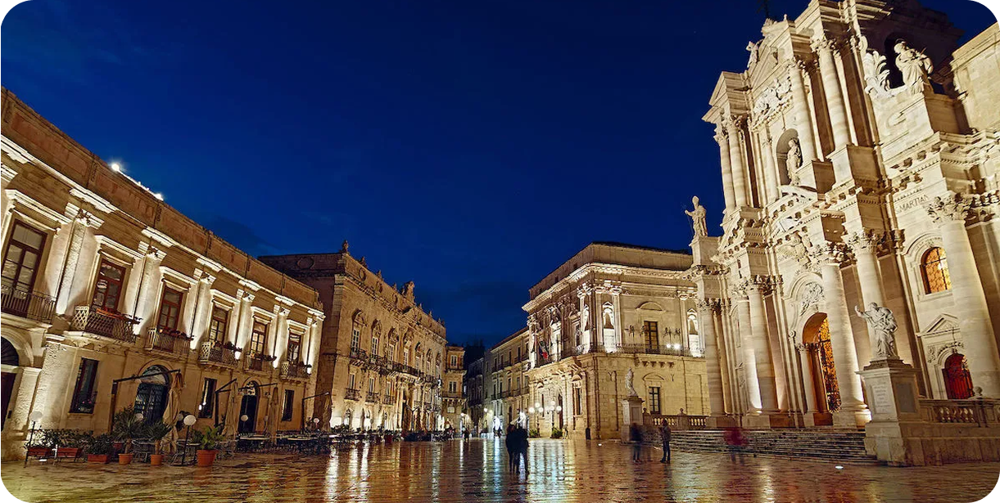
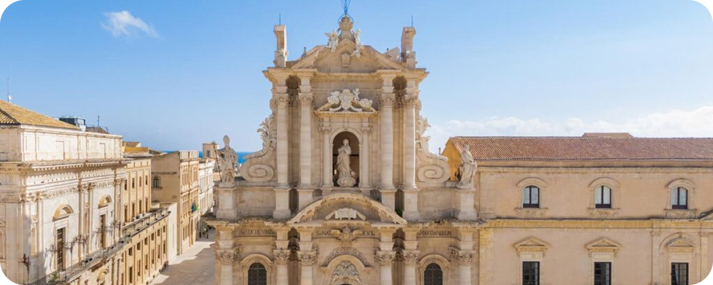
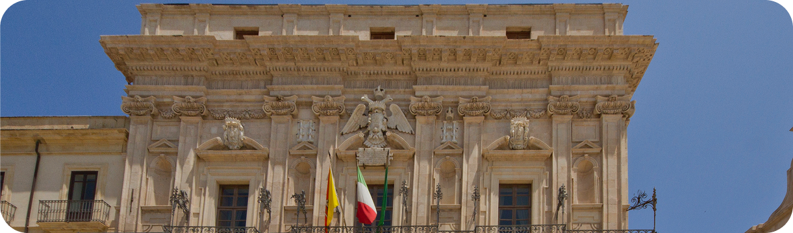
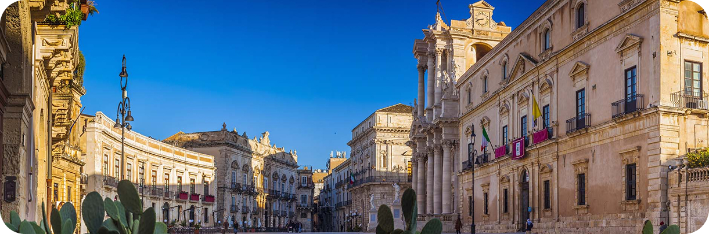

La Piazza del Duomo di Siracusa è il cuore pulsante di Ortigia, dominata dalla maestosa Cattedrale e circondata da palazzi storici che raccontano secoli di storia.
Dove si trova la piazza?
Piazza Duomo si trova nella parte più alta e centrale dell’isola di Ortigia, il cuore del centro storico di Siracusa, affacciata sul mare e ricca di testimonianze storiche.
La piazza ha una forma semi-ellittica e costituisce un nodo urbano chiave.
Ruolo della Cattedrale
La Cattedrale della Natività di Maria Santissima (Duomo di Siracusa) domina lo spazio urbano e ne definisce la funzione religiosa e simbolica. Incorporando colonne del Tempio di Atena, l’edificio rappresenta una continuità storica tra il mondo classico e quello cristiano. La chiesa è sede dell’arcivescovo e principale luogo di culto cittadino.
Elementi importanti
La piazza è circondata da una serie di edifici storici che contribuiscono alla sua eccezionale qualità architettonica e visiva come Palazzo Vermexio (o Palazzo del Senato), storico palazzo barocco sede municipale, costruito nel XVII secolo e Palazzo Beneventano del Bosco, elegante palazzo settecentesco con facciata e cortile di pregio.
Spazio simbolico della città
Piazza Duomo è considerata il “salotto” della città barocca di Siracusa per la sua armonia spaziale, la qualità architettonica e la molteplicità di testimonianze storico-artistiche che racchiude. Lo spazio rappresenta il punto di fusione tra epoca antica, medievale e moderna, sintetizzando la storia millenaria di Siracusa in un unico luogo urbano.



